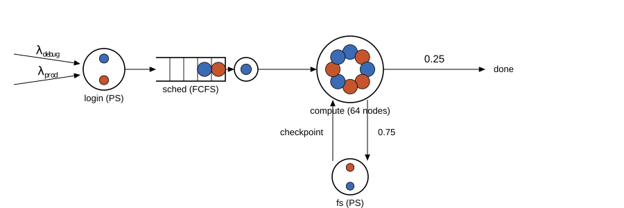
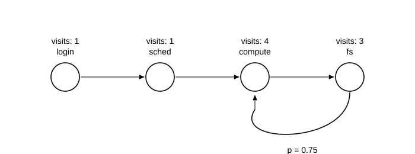
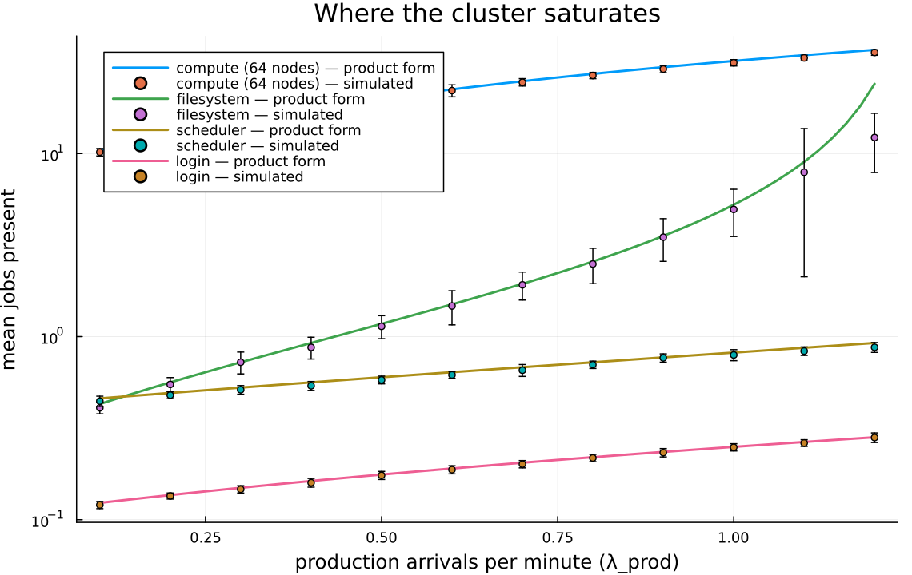
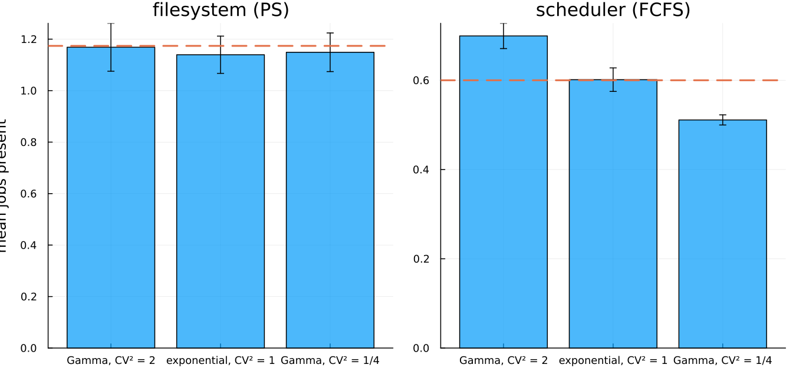

A BCMP model of a high-performance computing cluster
This page walks through examples/bcmp_hpc.jl: a multi-class queueing network model of an HPC cluster, checked against the exact theory of BCMP networks, with two experiments that show what the theory promises and where its promises stop.
What a BCMP network is
In 1975, Baskett, Chandy, Muntz, and Palacios proved a remarkable theorem. Take a network of queues. Let jobs belong to classes, move between stations according to probabilities, and demand different amounts of service by class. Then, if every station is one of four types, the stationary distribution of the whole network factorizes: the network behaves, in the long run, as if its stations were independent queues, each with a simple closed-form distribution. This is called a product-form solution, and the four station types are:
- FCFS with exponential service. One or more servers, first come first served. The price of this type: every class must have the same exponential service distribution. First come first served makes waiting jobs interchangeable, so the theory only survives if their remaining-work distributions are interchangeable too — which forces the memoryless law.
- Processor sharing. Everyone at the station is served at once, each at an equal fraction of the server's speed. Service laws may be general and class-dependent.
- Infinite server (a delay station). Every arrival gets its own server; nobody waits. Laws general and class-dependent.
- LCFS preemptive-resume. Last come first served, with preemption. Laws general and class-dependent.
The asymmetry between type 1 and the others is the interesting part. Types 2–4 have a property called insensitivity: their occupancy distribution depends on the service law only through its mean. You can replace an exponential service with a Gamma, a deterministic value, or a heavy-tailed law of the same mean, and the station's long-run occupancy does not move. Type 1 has no such property, and the second experiment below shows both facts side by side.
The cluster

The network: two job classes (debug in blue, production in orange) pass through a processor-sharing login node, a first-come-first-served scheduler, a 64-node compute pool, and a processor-sharing filesystem that jobs cycle through while checkpointing.
Two classes of work arrive at a cluster:
| class | arrivals | login | compute burst | checkpoint write |
|---|---|---|---|---|
| debug | 2.0 /min | 0.05 min | 1.0 min | 0.04 min |
| production | 0.5 /min | 0.10 min | 6.0 min | 0.20 min |
Every job passes through four resources:
- login — the login node, where users prepare a submission. Modeled as processor sharing (interactive shells share the CPU), with a class-dependent Gamma service law. BCMP type 2.
- sched — the scheduler, one server, FCFS, exponential service with the same mean for both classes (0.15 min). BCMP type 1, and the class-independence is required, not a simplification we chose.
- compute — 64 nodes, one job per node. At our loads a job essentially never waits, so this is a delay station. BCMP type 3.
- fs — the parallel filesystem, modeled as processor sharing. BCMP type 2.
After each compute burst, a job checkpoints to the filesystem with probability p = 0.75 and then computes again; with probability 0.25 it leaves. So a job makes a geometric number of compute visits — 4 on average, with 3 filesystem visits — and the network has a cycle in it, which the theory handles without complaint.
Class-dependent service travels as marks: each source stamps its jobs with its class's service scales, and the station laws read the marks. This is the same recorded-randomness machinery the rest of Concourse uses — every mark and every routing coin flip is drawn from a keyed stream and written into the record, so any run replays exactly.
source!(net, :prod_in;
interarrival = Law(:Exponential, scale = inv(Param(:lambda_prod))),
mark = MarkLaw(class = Law(:Dirac, value = Const(1.0)),
login_s = Law(:Dirac, value = Const(0.10)),
comp_s = Law(:Dirac, value = Const(6.0)),
io_s = Law(:Dirac, value = Const(0.20))))
station!(net, :login; discipline = ProcessorSharing(), servers = 1,
service = Law(:Gamma, shape = Const(2.0),
scale = Const(0.5) * Mark(:login_s)))
station!(net, :sched; discipline = FCFS(), servers = 1,
service = Law(:Exponential, scale = Const(0.15)))
station!(net, :compute; discipline = FCFS(), servers = 64,
service = Law(:Exponential, scale = Mark(:comp_s)))
station!(net, :fs; discipline = ProcessorSharing(), servers = 1,
service = Law(:Exponential, scale = Mark(:io_s)))
route!(net, :compute, Probabilistic(:fs => 0.75, :done => 0.25))
route!(net, :fs, Always(:compute))The closed forms
Product form makes the predictions elementary. First solve the traffic equations — each station's total arrival rate, counting revisits. The checkpoint loop turns one external arrival into a geometric number of internal visits:

With per-class external rates λ_c and those mean visit counts (login 1, sched 1, compute 4, fs 3), each station's load is
ρ = Σ_c λ_c · (visits) · (mean service of class c).Then each station's mean occupancy is a one-liner:
- FCFS and PS:
L = ρ / (1 − ρ) - delay:
L = ρ(the occupancy is Poisson).
Per-class response times follow by summing sojourns: a PS visit costs E[S_c] / (1 − ρ), an FCFS visit E[S] / (1 − ρ), a delay visit E[S_c], and Little's law N_c = λ_c · T_c cross-checks the class decomposition against a completely different measurement.
Experiment 1: the simulation against the theory
Sixteen replications of 2000 simulated minutes. Every station and both class totals agree with the product form within the repository's four-standard-error convention (the test/test_bcmp.jl charter test pins this claim, with the debug-mode membership oracle on):
| quantity | simulated | product form | |z| |
|---|---|---|---|
| login | 0.177 ± 0.001 | 0.176 | 0.2 |
| sched | 0.604 ± 0.006 | 0.600 | 0.6 |
| compute | 19.981 ± 0.142 | 20.000 | 0.1 |
| fs | 1.182 ± 0.015 | 1.174 | 0.5 |
| debug jobs in system | 9.099 ± 0.033 | 9.119 | 0.6 |
| production jobs in system | 12.645 ± 0.101 | 12.831 | 1.8 |
The last two rows are the per-class Little's-law check: the measured class populations against λc · Tc with T_c computed from per-visit sojourns (debug 4.56 min, production 25.66 min). Two completely different routes to the same numbers.
Experiment 2: where the cluster saturates
Hold debug arrivals fixed and raise the production rate from 0.1 to 1.2 jobs per minute.

The compute pool holds by far the most jobs — about 20 at the base point — but it is a delay station: its occupancy grows linearly, and with 64 nodes it is nowhere near trouble. The danger is the quiet curve below it: the filesystem's load crosses 0.9 as λ_prod approaches 1.2, and its occupancy turns up the ρ/(1−ρ) wall. The model says the cluster's first failure mode is filesystem contention from checkpoint traffic, not compute capacity — the kind of conclusion HPC operators pay for, read directly off two closed-form curves that the simulation reproduces.
(The last simulated point sits below its curve with a wide error bar. That is what near-saturation looks like in a finite window: at ρ = 0.96 the queue's relaxation time exceeds the 1000-minute horizon, so the time-average has not yet climbed to its stationary value. The theory curve is the infinite-horizon limit.)
Experiment 3: insensitivity, and the FCFS exception
Fix all means and change only the service distribution — coefficient of variation 2, 1, and 1/4 — first at the processor-sharing filesystem, then at the FCFS scheduler.

The filesystem's occupancy does not move (1.17, 1.14, 1.15 — all within noise of the product-form 1.174): that is insensitivity, the defining privilege of BCMP types 2–4, and the dashed product-form line runs through all three bars. The scheduler's occupancy moves with the variance (0.70, 0.60, 0.51 across CV² = 2, 1, 1/4) — more variable service, longer queue, exactly as Pollaczek–Khinchine intuition says — and with a non-exponential FCFS station the network as a whole has left the BCMP class. The two panels are the theorem's boundary, drawn by simulation.
What this demonstrates about Concourse
- Multi-class BCMP structure — classes, class-dependent laws, probabilistic routing, cyclic routes — assembles from the existing surface language (marks + kernels) with no new machinery.
- Processor sharing, the discipline behind types 2's insensitivity, is the same PS implementation the charter tests against M/G/1-PS theory.
- Every run is exactly replayable (marks and coin flips are recorded), and every demonstration run executes with the delta-fidelity oracle checking the sampler against the model at each firing.
- The measurements are replay-based: occupancies are time averages read off replayed states, not counters bolted into the simulator.
Running it
julia --project=examples examples/bcmp_hpc.jlRuntime is a few minutes; figures land in docs/figures/.